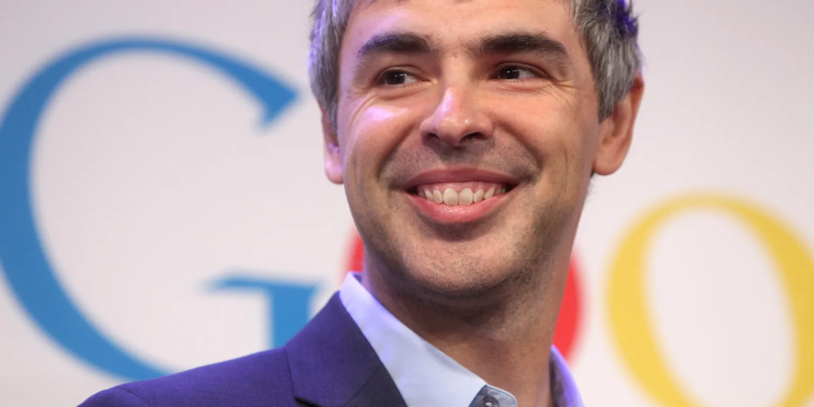
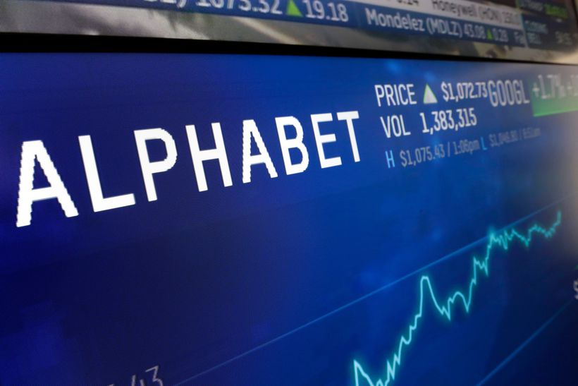

Module: Computational Thinking
Biography
Reshaping the knowledge

Larry Page, born on March 26, 1973 in Michigan, is an American
computer scientist and entrepreneur who co-founded Google,
one of the most influential companies in the world.
Page’s contribution to computer science has transformed
the way people access information and reshaped the
internet into the vast repository of knowledge we know today.
Page was born in a home of scientists. His father, Carl Page,
was a pioneer in Computer Science and his mother was a teacher
of computer programming. Inspired by his parents, he pursued a Bachelor
of Science degree in engineering from the University of Michigan. After
his Bachelor degree, he studied computer engineering at Stanford University,
where he met Sergey Brin (Biography, 2021).
The two students, while pursuing their Ph.D. studies, became interested
in developing a search engine that could list the results accordingly
to the popularity of the pages. The first name of this engine was “BackRub”
it was operated on Stanford servers for many months (TheFamousPeople, 2021).
As they saw initial successes with the search engine, they decided to
create a company and renamed the project as “Google”, after the
mathematical term “googol”, which refers to the number 1 followed by 100 zeros.
This simple and meaningful decision reflects their mission to organize, sort,
and categorize the immense amount of data available on the internet
(Catana et al. 2021). This algorithm that ranked web pages based on their
relevance revolutionized how search results were displayed. The minimalist
design made the site easy to use, Two years after the launch of the engine,
the founders received its first rounds of investment from a few technology titans
and angel investors. The financial capital allowed the founders to formally
open up their operations in California, and hire its first employees. In
under just three decades, Google has grown to one of the largest
companies globally, with over US$1.7T in market cap, operated and run
by ~182,000 employees and generating over US$280 billion in annual revenues
(Alphabet Annual Report, 2022).

Under Page’s leadership as CEO, Google expanded its services far beyond
being a search engine. The company developed many products that we
use in our daily basis, such as Google Maps, Google Drive, Google’s
Android operating system, Gmail, among others. Each of these products
contributed to the mission of organizing the world’s information and
making it universally accessible and useful. Page’s vision of a future
where technology can be applied in every aspect of our lives is
one of his most inspirational contributions to the field. Before
he stepped down as CEO, he transformed Google into Alphabet Inc.,
a conglomerate that houses multiple subsidiaries with the mission of
exploring cutting-edge innovative technologies, from self-driving cars,
wearable technology (Google Glass) to life sciences (Verily).
Larry Page’s influence on computer science is remarkable,
he has inspired countless entrepreneurs and technologists,
transforming the way our society interacts with information and
shaping the digital revolution that continues to unfold today.
References
- Alphabet, 2022. Alphabet Annual report. Page 81. Available at:
https://abc.xyz/assets/d4/4f/a48b94d548d0b2fdc029a95e8c63/2022-alphabet-annual-report.pdf
- Biography, 2021. Larry Page. Available at: https://www.biography.com/scientist/larry-page
- Catana, Stefan-Alexandru ; Toma, Sorin-George ; Gradinaru, Catalin, 2021.
Larry Page and Internet Entrepreneurship. “Ovidious” University Annals.
Economic Sciences Series Vol. XXI,. P.240.
Available at: https://stec.univ-ovidius.ro/html/anale/RO/2021-2/Section%203/8.pdf
-
TheFamousPeople, 2021. Larry Page Biography.
Available at: https://www.thefamouspeople.com/profiles/larry-page-3344.php